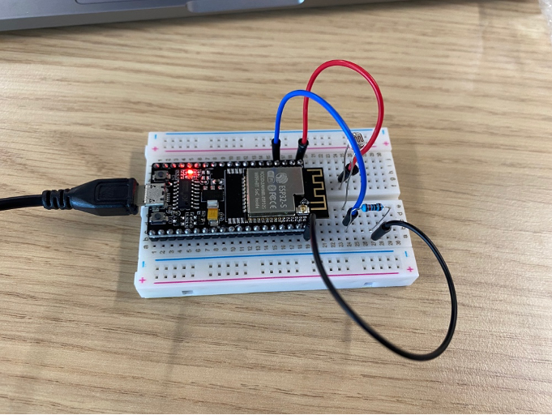
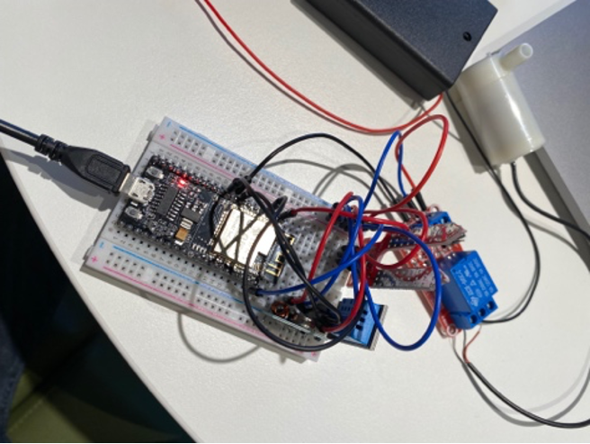

Week 1 & 2
In de eerste twee weken ben ik druk bezig geweest met het verbinden van de sensoren met de ESP-32 (WIFI Enabled microcontroller). Dit heb ik allemaal gedaan met behulp van de workshops die Matthijs op Robotexchange.io had gezet.
Week 1 : Getting started
In deze eerste week hebben we kennis gemaakt met Mathijs die voor de workshops en begeleiding zorgt. Uiteindelijk is hierbij duidelijk geworden dat het doel van deze leerlijn is om te komen tot een geautomatiseerd systeem dat een plant kan onderhouden. Hierbij komen verschillende nieuwe technologieën kijken, zoals: IOT, maken van een PCB, het 3D-printen van een casing en het solderen van de componenten op de PCB.
Een term die mij opviel en aansprak in dit college was de term ‘Death of Distance’, wat inhoudt dat afstand in de tijd van nu geen belemmering meer is voor communicatie en samenwerking over de hele wereld.
In deze eerste workshop zijn we vooral bezig geweest met het opstarten van de module en het meer leren over alle componenten die gebruikt zullen gaan wornde. Daarnaast zijn we gestart met een aantal kleine beginde handelingen, zoals: installeren van Platform.io op Visual Studio Code, het laten knipperen van het lichtje op de ESP32, het aansluiten van de lichtsensor en het weerstandje werkende krijgen.
Week 2 : Sensors & Actuators
In week 2 ben ik verder gegaan met het toevoegen van nieuwe componenten en het testen hiervan. Dit ervoer ik al als een stuk moeilijker dan de week ervoor. Het was goed opletten en zoeken naar de juiste connecties, na een klein beetje hulp lukte dit opzich zelf wel goed en was het zowel leuk als leerzaam om hiermee bezig te zijn. Het programmeren op Visual Studio Code ervoer ik daarentegen wel nog als moeilijk maar was nog te doen, de twijfels begonnen alleen wel toe te slaan of ik dit uiteindelijk allemaal zelfstandig zou kunnen.
